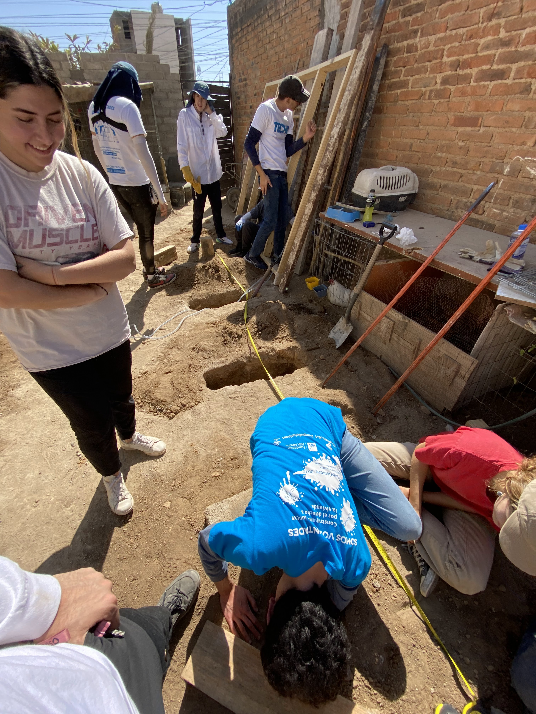
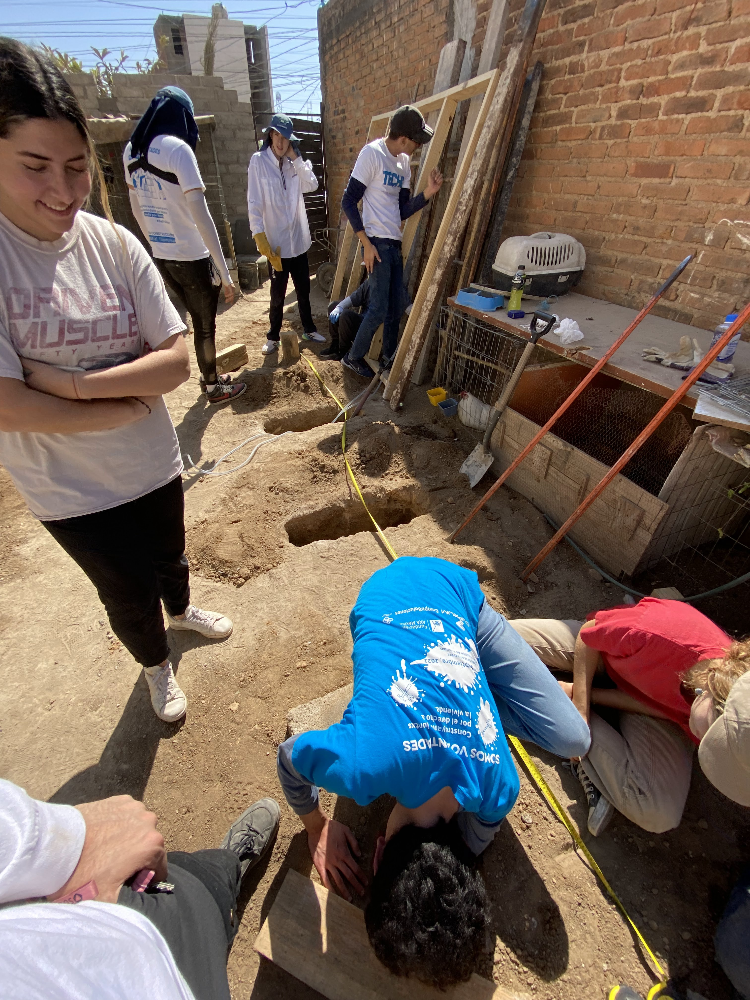
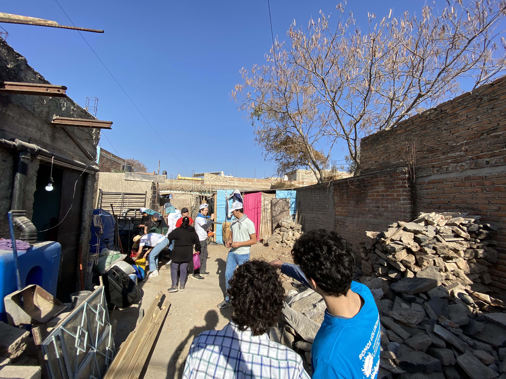
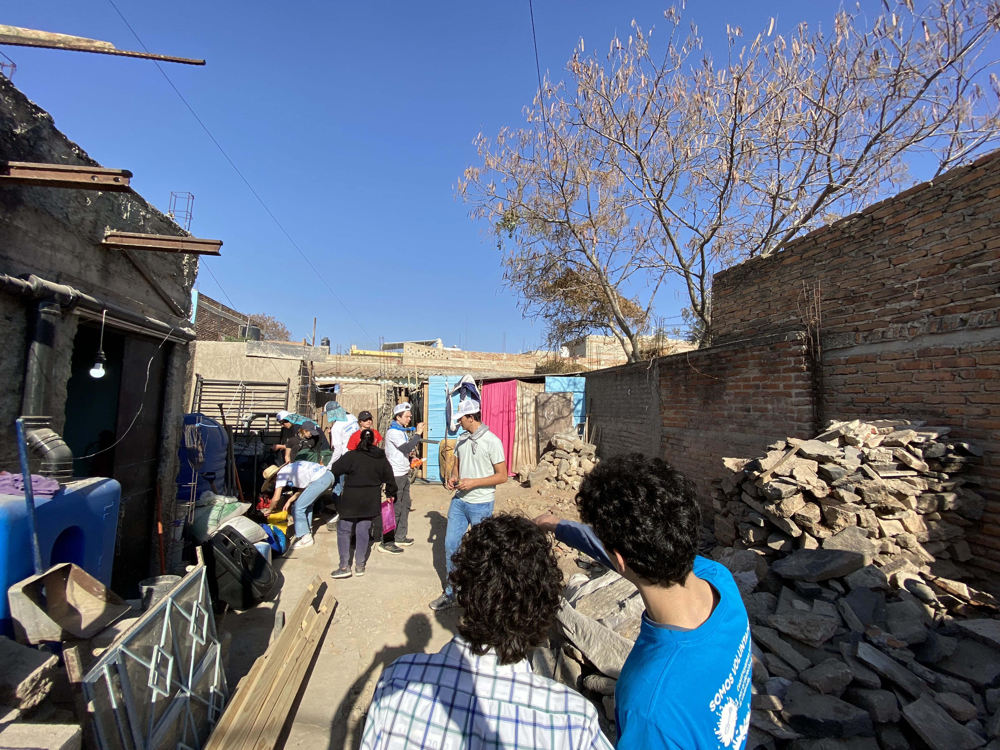

TECHO Construction
TECHO Club, 2022 - 2023
A 100-person construction was planned
culminating in the building of 10 wooden houses in the
marginalized communities of Mesas Coloradas, Zapopan, Mexico. The
build took place over three days during which each leader was
assigned several groups of 10 people, each group corresponding to
a house to monitor and assist during the process. All volunteers
spent three days and nights in the community with reflection
activities carried out at night and post-construction. Throughout
the construction, volunteers gained insight and experienced the
lifestyle in these marginalized communities.
The planning phase included making trips to the community to assess household terrains, gain insight into the community and families' needs, carry out interviews and paperwork, and fundraise enough money to cover the costs of the build. After the construction, periodic checks on the houses were carried out to ensure the houses were in proper condition. Food and toys were donated to the families and construction activities were carried out with the families to involve them in the process.
 

 
